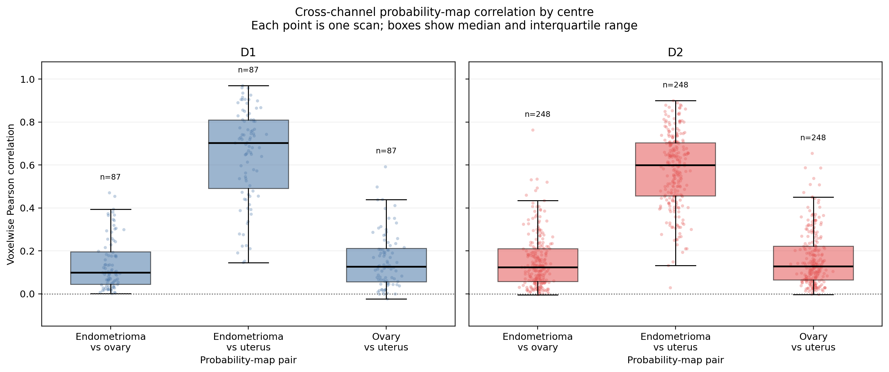
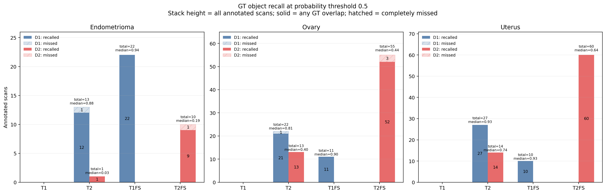
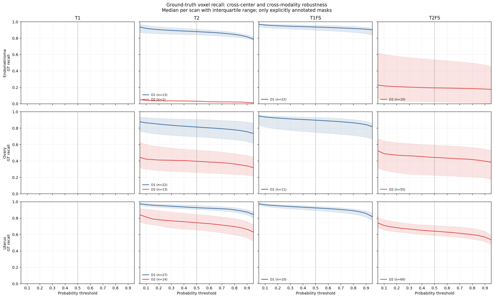

Endometriosis: Do NOT fully trust FM – Question it
Hierarchical anatomical reasoning and statistical rejection




Ground-truth recall audit
Operating threshold: 0.5. Median [IQR] across explicitly annotated scans. Missing domain–modality combinations are not interpreted as negatives.
| threshold | Class | Domain | Modality | Annotated scans | Recall @ 0.1 | Recall @ 0.5 | Recall @ 0.9 |
|---|---|---|---|---|---|---|---|
| endometrioma | D1 | T1FS | 22 | 0.961 [0.928, 0.974] | 0.937 [0.898, 0.958] | 0.910 [0.855, 0.934] | |
| endometrioma | D1 | T2 | 13 | 0.919 [0.861, 0.956] | 0.880 [0.840, 0.911] | 0.817 [0.795, 0.841] | |
| endometrioma | D2 | T2 | 1 | 0.041 [0.041, 0.041] | 0.032 [0.032, 0.032] | 0.017 [0.017, 0.017] | |
| endometrioma | D2 | T2FS | 10 | 0.219 [0.047, 0.604] | 0.194 [0.022, 0.537] | 0.180 [0.006, 0.475] | |
| ovary | D1 | T1FS | 11 | 0.936 [0.815, 0.952] | 0.897 [0.750, 0.931] | 0.843 [0.689, 0.884] | |
| ovary | D1 | T2 | 22 | 0.865 [0.748, 0.929] | 0.814 [0.694, 0.907] | 0.757 [0.638, 0.876] | |
| ovary | D2 | T2 | 13 | 0.422 [0.299, 0.601] | 0.396 [0.259, 0.533] | 0.340 [0.228, 0.467] | |
| ovary | D2 | T2FS | 55 | 0.489 [0.284, 0.644] | 0.444 [0.225, 0.594] | 0.398 [0.194, 0.545] | |
| uterus | D1 | T1FS | 10 | 0.963 [0.942, 0.976] | 0.925 [0.893, 0.946] | 0.858 [0.813, 0.889] | |
| uterus | D1 | T2 | 27 | 0.965 [0.944, 0.981] | 0.928 [0.906, 0.956] | 0.875 [0.842, 0.903] | |
| uterus | D2 | T2 | 14 | 0.815 [0.731, 0.909] | 0.745 [0.656, 0.847] | 0.664 [0.561, 0.758] | |
| uterus | D2 | T2FS | 60 | 0.712 [0.657, 0.780] | 0.641 [0.589, 0.711] | 0.569 [0.512, 0.640] |
| Scan | ID | Final | Reason | Stage 1 · Anatomical reasoning | Stage 2 · Inter-class rank statistics | Stage 3 · Intra-class equivalence | |||||||||||||||||||
|---|---|---|---|---|---|---|---|---|---|---|---|---|---|---|---|---|---|---|---|---|---|---|---|---|---|
| Pass | Path | Uterus repair | Morphology | Sphericity | Elongation | Uterus ΔS | Ovary ΔS | Ovary surface | Pass | q uterus | Effect uterus | q ovary | Effect ovary | q local | Effect local | Pass | Credible ref | Reference | Joint distance | q intra | Effect intra | ||||
D1-derived spatial priors
{
"uterus_ovary_distance_min_mm": 28.919339836476798,
"uterus_ovary_distance_max_mm": 80.34581863257115,
"uterus_ovary_distance_median_mm": 46.19857571182406,
"uterus_ovary_delta_r_min_mm": -56.95180047797167,
"uterus_ovary_delta_r_max_mm": 66.91039218775617,
"uterus_ovary_delta_a_min_mm": -77.9852523584235,
"uterus_ovary_delta_a_max_mm": 47.64691429716311,
"uterus_ovary_delta_s_min_mm": -27.761998570158642,
"uterus_ovary_delta_s_max_mm": 47.37463167263278,
"uterus_ovary_abs_delta_r_median_mm": 34.65748592725825,
"uterus_ovary_delta_a_median_mm": -7.553844614026232,
"uterus_ovary_delta_s_median_mm": 16.393947780241717,
"endometrioma_uterus_distance_min_mm": 22.431150256810803,
"endometrioma_uterus_distance_max_mm": 109.57919205495038,
"endometrioma_uterus_delta_r_min_mm": -84.65533937498755,
"endometrioma_uterus_delta_r_max_mm": 97.02145133341777,
"endometrioma_uterus_delta_a_min_mm": -69.35245146901153,
"endometrioma_uterus_delta_a_max_mm": 49.79166792078732,
"endometrioma_uterus_delta_s_min_mm": -66.63317747554899,
"endometrioma_uterus_delta_s_max_mm": 69.76285699013235,
"endometrioma_ovary_delta_r_min_mm": -117.46039331836204,
"endometrioma_ovary_delta_r_max_mm": 120.34719804485266,
"endometrioma_ovary_delta_a_min_mm": -37.72635979716814,
"endometrioma_ovary_delta_a_max_mm": 74.11768728035908,
"endometrioma_ovary_delta_s_min_mm": -100.06834794261658,
"endometrioma_ovary_delta_s_max_mm": 50.53902136721734,
"endometrioma_ovary_surface_max_mm": 30.0,
"endometrioma_volume_min_mm3": 20.0,
"endometrioma_volume_max_mm3": 496703.6787600856,
"endometrioma_sphericity_min": 0.05,
"endometrioma_sphericity_max": 1.0,
"endometrioma_elongation_min": 1.0,
"endometrioma_elongation_max": 20.0,
"endometrioma_superior_extent_min_mm": 1.3634546923905322,
"endometrioma_superior_extent_max_mm": 135.30446332200967,
"n_uterus_ovary_pairs": 35,
"n_endometrioma_uterus_pairs": 52,
"n_endometrioma_ovary_pairs": 51
}